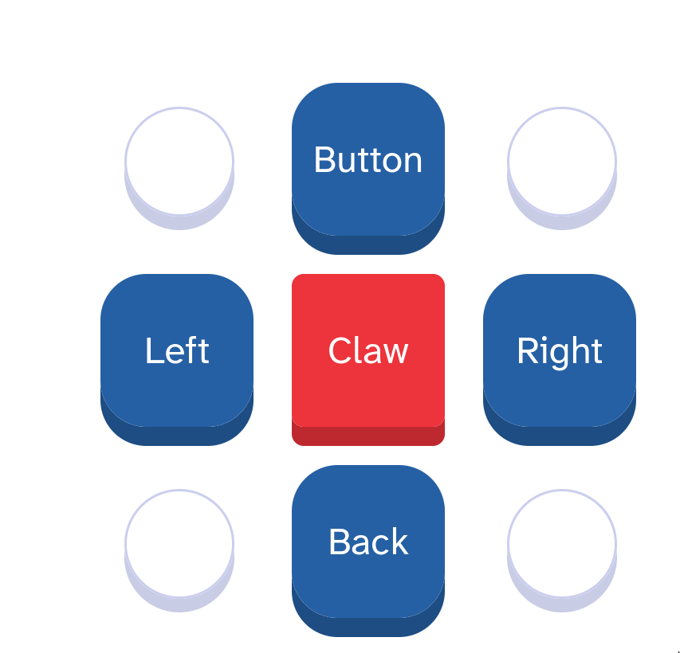

Fightclub allows you to connect your bot to the website, and add buttons to your virtual gamepad and hook them up to your own code. You can either use block based programming, or you can use Python-scripting.
